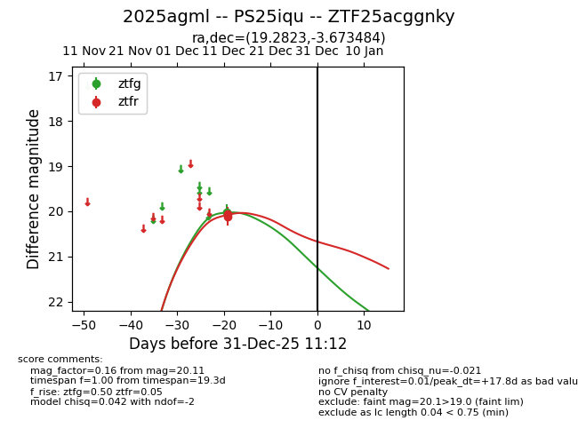
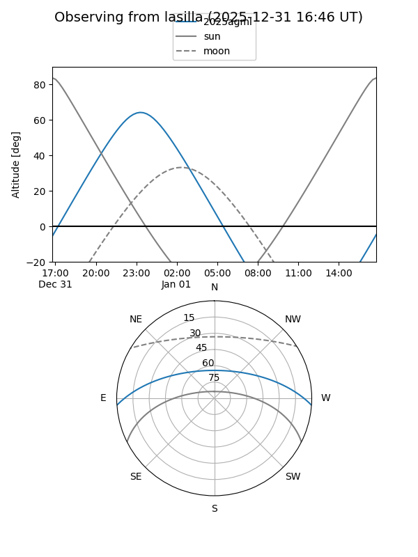
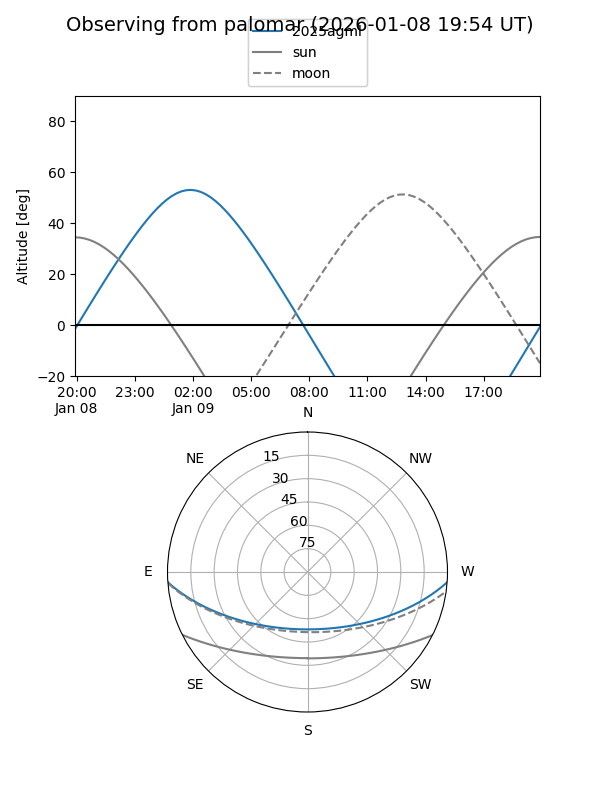

2025agml
Target 2025agml at 2025-12-31 16:59
Aliases and brokers:
FINK:
Lasair:
ALeRCE:
TNS:
YSE:
alt names
ZTF25acggnky (ztf,fink_ztf)
2025agml (tns,yse)
PS25iqu (panstarrs)
Coordinates:
equatorial (ra, dec) = 19.2823,-3.67348
equatorial (HMS+DMS) = 01:17:07.75,-03:40:24.54
galactic (l, b) = (138.7068,-65.75530)
Flags:
Photometry:
last ztfg=20.03, ztfr=20.11
1 ztfg, 2 ztfr detections
Lightcurve

Visibility


Additional plots